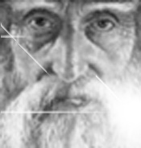
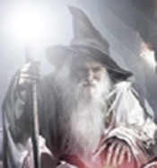
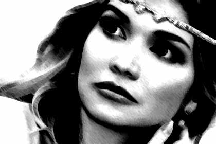
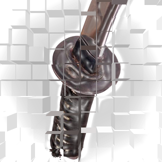
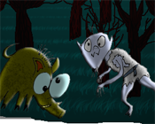
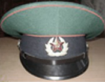
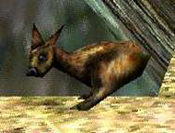

Произведения в прозе. Хронология намеренно нарушена
|  | 01-Смещение. Рассказ повествует о контакте разных миров, в равной мере претендующих на обладание главным героем и пытающихся свести его в могилу каждый своим способом. Почти фэнтези, но не совсем. Эд Гринвуд очень повлиял. Часть иллюстраций моя (это те, что пострашнее). Симпатичные иллюстрации выполнены одноклассницей брата Ириной Г. |
|  | 02-Перемещение. Рассказ является независимым продолжением "Смещения" и повествует о вынужденном путешествии главного героя-мага между мирами и спасении одного из них. Фэнтези |
|  | 03-Замещение. Рассказ является независимым продолжением двух предыдущих и повествует о том, как трудно бывает иногда замещать босса, особенно, когда он - маг, а ты - женщина. И тоже маг. |
|  | 04 - Совмещение. Так уж получилось, что в трилогию закрался четвёртый элемент при положенных трёх. Небольшая история от первого лица о персонаже двойного класса маг/вор, охотившемся на императорский Вакидзаси Силы |
|  |
Вепрь и Упырь. Серия кратких плоскоюмористических сказов |
|  | Курс молодого бойца. Бредопьеса придумана прямо во время дурацкого утреннего сна. Что получилось запомнить, вложено в текст. Милитаристический трэш. |
|  | Сказ о Кукыте. Компиляция на тему безумной радости, приносимой зверьками из серии компьютерных игр Unreal. |